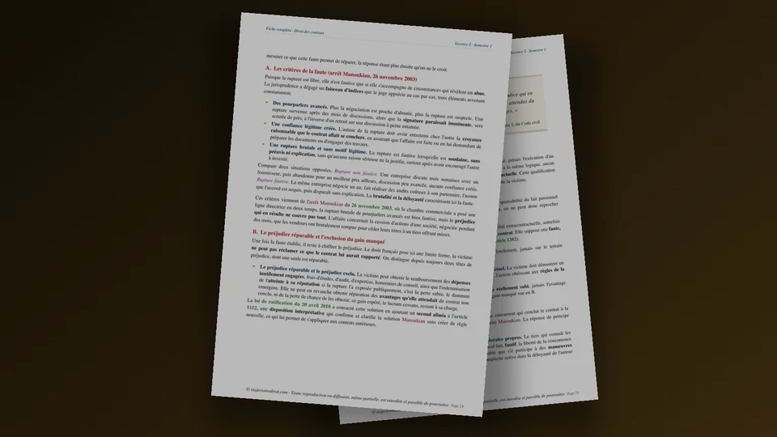

Sujets de droit des contrats L2, exemples d'examen avec leur correction
En droit des contrats L2, les sujets d'examen prennent quatre formes, la dissertation, le cas pratique, le commentaire d'arrêt et les questions de cours. Tu trouves ici quatorze sujets classés par thème du programme, une dissertation corrigée sur la bonne foi, un cas pratique corrigé sur les clauses abusives, huit questions de cours et la fiche complète en PDF.


La fiche complète du semestre 1
Droit des contrats L2, la fiche complète de 157 pages
Tout le programme de la formation du contrat jusqu'aux sanctions de l'inexécution, avec la réforme de 2016 intégrée. Chaque chapitre donne les articles du Code civil, les définitions et les arrêts que tu cites dans tes dissertations, tes cas pratiques et tes commentaires d'arrêt.
- Les articles 1100 et suivants replacés dans leur contexte
- Les arrêts à citer, avec leur date et leur apport
- Un PDF reçu juste après le paiement
Paiement Stripe · accès à vie · mises à jour incluses · garantie satisfait ou remboursé sous 7 jours
Quels sujets d'examen tombent en droit des contrats en L2 ?
Le programme de droit des contrats suit la vie du contrat. Tu étudies d'abord sa formation, qui va de la négociation jusqu'aux vices du consentement. Tu passes ensuite à son contenu et à sa validité. Les effets du contrat viennent après, et le programme se termine avec l'inexécution et ses sanctions. Depuis l'ordonnance du 10 février 2016, ratifiée par la loi du 20 avril 2018, tous ces chapitres s'appuient sur les articles 1100 et suivants du Code civil.
Les sujets d'examen puisent dans ces quatre blocs, et chaque faculté choisit son format. Tu dois donc regarder dans ta plaquette quel exercice t'attend, puis t'entraîner sur celui-là. Cette page te donne les quatre formats classiques, une liste de sujets possibles, une dissertation et un cas pratique corrigés, puis huit questions de cours.
Un sujet de droit des contrats se traite avec la même rigueur, quel que soit son format. Tu identifies d'abord la règle, avec son article du Code civil, puis tu l'appuies sur l'arrêt qui l'a précisée, et tu en tires la conséquence pour le sujet ou pour les faits. Un article cité sans arrêt reste théorique aux yeux du correcteur.
Les quatre formats d'examen de droit des contrats, un par un
Voici ce que chaque exercice attend de toi, et la page qui t'aide à le préparer.
1. La dissertation
Le sujet tient en quelques mots, par exemple « La bonne foi » ou « Le consentement ». Tu construis un plan en deux parties qui défend une thèse. Tu prépares d'abord l'exercice avec la méthode de la dissertation juridique, puis la dissertation corrigée sur la force obligatoire du contrat t'en donne un exemple complet. Un second sujet, sur la bonne foi, est traité plus bas.
2. Le cas pratique
On te décrit une situation et on te demande qui a raison. Tu raisonnes avec les faits, le problème de droit, la règle et l'application, comme l'explique la méthode du cas pratique. D'ailleurs, la formation du contrat et le dol par réticence sont déjà corrigés sur le site. Un troisième cas, sur les clauses abusives, figure plus bas.
3. Le commentaire d'arrêt
On te remet une décision de la Cour de cassation, souvent un arrêt qui interprète un article de la réforme de 2016. Tu l'expliques, tu en discutes la valeur et tu en mesures la portée. Tu trouves la méthode dans la page sur le commentaire d'arrêt, et l'arrêt Chronopost te sert d'exemple sur la clause limitative de responsabilité.
4. Les questions de cours et le QCM
Elles demandent un article, une définition ou un mécanisme, par exemple les étapes de l'imprévision. Les huit questions corrigées plus bas te montrent le niveau de précision attendu.
Quels sujets peuvent être posés, thème par thème ?
Le programme limite le nombre de sujets possibles. Voici quatorze sujets, rangés dans l'ordre du cours, avec l'angle qui te permet de bâtir un plan en deux parties.
- « La liberté contractuelle ». L'article 1102 laisse chacun libre de contracter ou non. Il lui permet aussi de choisir son cocontractant et de fixer le contenu du contrat, dans les limites de l'ordre public. Le plan oppose le principe, puis ses limites.
- « La bonne foi en droit des contrats ». L'article 1104 impose la bonne foi à toutes les étapes du contrat. Le sujet est traité en entier plus bas.
- « La force obligatoire du contrat ». L'article 1103 donne au contrat la valeur d'une loi pour les parties. Pourtant, le juge et les parties peuvent y toucher dans certains cas, ce que montre la dissertation corrigée sur ce sujet.
- « Les pourparlers ». La rupture des négociations reste libre d'après l'article 1112, sauf si elle manque à la bonne foi. L'arrêt Manoukian de 2003 fixe la réparation à la perte subie, sans les gains espérés.
- « Le devoir d'information ». L'article 1112-1 oblige celui qui connaît une information déterminante à la donner à l'autre. Le devoir ne porte pas sur la valeur de la prestation, et les parties ne peuvent ni le limiter ni l'exclure.
- « L'offre et l'acceptation ». Le contrat se forme par la rencontre de ces deux volontés. Le sujet demande à quelles conditions une offre lie son auteur, mais aussi à quel moment le contrat est conclu. Tu t'appuies donc sur la page de la formation du contrat.
- « Le dol ». L'article 1137 vise les manœuvres et le mensonge, et son alinéa 2 ajoute la dissimulation intentionnelle d'une information déterminante. Le plan distingue l'élément matériel et l'élément intentionnel.
- « L'erreur ». Elle ne cause la nullité que si elle porte sur les qualités essentielles de la prestation ou du cocontractant, et si elle est excusable. Le sujet demande où passe la limite entre l'erreur qui annule et le simple mauvais calcul.
- « La violence économique ». L'article 1143 sanctionne l'abus de l'état de dépendance, quand il procure un avantage manifestement excessif. Le sujet interroge la protection du contractant faible.
- « L'équilibre du contrat ». L'article 1168 écarte en principe la nullité pour défaut d'équivalence des prestations. Pourtant, le Code civil contrôle bien le contenu du contrat, car trois textes le permettent. L'article 1169 vise la contrepartie dérisoire, l'article 1170 la clause qui vide l'obligation essentielle de sa substance, et l'article 1171 le déséquilibre significatif.
- « Le contrat d'adhésion ». L'article 1110 le définit par des clauses non négociables, déterminées à l'avance par une partie. Le sujet demande quelle protection ce régime apporte.
- « La nullité du contrat ». L'article 1178 distingue la nullité prononcée par le juge de celle que les parties constatent d'un commun accord, et le contrat annulé est censé n'avoir jamais existé. Tu retrouves le régime sur la page de la nullité du contrat.
- « L'imprévision ». L'article 1195 organise une renégociation, puis une résolution amiable ou une révision par le juge. Le sujet demande si le droit français cède enfin à la révision judiciaire.
- « Les sanctions de l'inexécution ». L'article 1217 liste cinq sanctions, que le créancier peut cumuler si elles sont compatibles. Le plan peut opposer les sanctions que le créancier prend seul, puis celles qui passent par le juge.
Tu peux t'entraîner en préparant le plan de chacun de ces sujets, puis en le comparant à ton cours pour repérer les arrêts datés qui manquent.
Dissertation corrigée, la bonne foi en droit des contrats
Ce sujet est original, écrit pour cette page. Il traverse tout le programme, puisque la bonne foi s'applique du début des négociations jusqu'à la fin de l'exécution. Je te montre les trois étapes du travail préparatoire, puis le plan détaillé. Tu peux ensuite reprendre cette méthode sur n'importe quel autre sujet de la liste.
Étape 1, le décorticage des mots du sujet
La bonne foi désigne ici la loyauté, c'est-à-dire l'honnêteté de la conduite d'un contractant envers l'autre. Elle se distingue de la bonne foi subjective, qui est l'ignorance d'un vice, comme celle d'un acquéreur qui ignore que son vendeur n'est pas propriétaire. Le contrat s'entend de la négociation à l'exécution, puisque l'article 1104 du Code civil dit que les contrats doivent être négociés, formés et exécutés de bonne foi. Le sujet n'a pas de point d'interrogation. Il te demande donc de décrire la place du principe et son régime, en reliant chaque arrêt à une règle.
Étape 2, la problématique
Le législateur de 2016 a placé la bonne foi parmi les dispositions liminaires du Code civil, et il en a fait une règle d'ordre public. En parallèle, les juges refusent d'en faire un moyen de réécrire le contrat. Jusqu'où la bonne foi peut-elle contrôler le comportement des contractants sans remettre en cause l'accord qu'ils ont conclu ?
Étape 3, le plan détaillé
I. La bonne foi, un principe qui gouverne toute la vie du contrat.
A. Elle s'applique de la négociation à l'exécution. L'article 1104 pose la règle à tous les stades, et l'article 1112 précise que l'initiative, le déroulement et la rupture des négociations sont libres, mais qu'ils doivent satisfaire aux exigences de la bonne foi. Un contractant peut donc rompre des pourparlers, et il engage sa responsabilité s'il le fait de mauvaise foi. Dans l'arrêt Manoukian du 26 novembre 2003, la Cour de cassation a jugé la rupture fautive parce que les cédants avaient conclu avec un tiers en laissant leur partenaire croire que la signature était proche, et elle a refusé de réparer la perte des gains que le contrat aurait procurés. L'alinéa 2 de l'article 1112 reprend aujourd'hui cette limite. Le principe a pourtant une borne dans le temps. Le 14 septembre 2005, la troisième chambre civile a jugé que la bonne foi suppose un lien contractuel et ne joue plus quand la condition suspensive a défailli et mis fin à la promesse.
B. Elle fait naître des devoirs précis et impératifs. L'article 1112-1 oblige celui qui connaît une information déterminante pour le consentement de l'autre à la lui donner, quand l'autre l'ignore légitimement ou lui fait confiance. En revanche, cette obligation ne porte pas sur l'estimation de la valeur de la prestation. Son alinéa 5 interdit aux parties de la limiter ou de l'exclure, et l'article 1104 alinéa 2 déclare lui-même la bonne foi d'ordre public. Aucune clause ne peut donc l'écarter par avance.
II. La bonne foi, un principe que le juge manie avec retenue.
A. Elle sanctionne les comportements déloyaux dans l'exécution. Dans l'arrêt Huard du 3 novembre 1992, la chambre commerciale a approuvé les juges d'avoir condamné un fournisseur de carburant qui vendait à son distributeur à un prix supérieur au prix de détail pratiqué par ses propres mandataires, ce qui privait ce distributeur des moyens de pratiquer des prix concurrentiels. La Cour a jugé que le fournisseur n'avait pas exécuté le contrat de bonne foi. De même, la première chambre civile a reproché à des juges, le 16 février 1999, de ne pas avoir recherché si l'inertie d'une crédirentière pendant douze ans, face à des arrérages impayés, n'excluait pas la bonne foi dans la mise en œuvre de la clause résolutoire.
B. Elle ne permet pas de modifier la substance du contrat. Dans l'arrêt Les Maréchaux du 10 juillet 2007, la chambre commerciale a cassé une décision qui refusait à un cessionnaire de titres le bénéfice d'une garantie de passif, au motif qu'il était déloyal. Elle a jugé que la bonne foi permet de sanctionner l'usage déloyal d'une prérogative contractuelle, sans autoriser le juge à porter atteinte à la substance même des droits et obligations convenus. Le juge contrôle donc la manière dont un droit s'exerce, et le contenu du contrat reste celui que les parties ont fixé.
Réponse à donner. La bonne foi contrôle la loyauté des contractants à chaque étape du contrat, et le juge l'utilise pour sanctionner un comportement, sans réécrire l'accord. L'article 1104 lui donne une portée générale, et la jurisprudence en fixe la mesure.
Cas pratique corrigé, peut-on faire réputer non écrites des clauses d'un contrat d'adhésion ?
Cet exercice porte sur les clauses abusives. L'article 1171 du Code civil attire le premier réflexe de l'étudiant, mais la jurisprudence récente en réserve l'usage aux contrats que ni le Code de commerce ni le Code de la consommation ne couvrent. Le sujet est original, et les deux sociétés n'existent pas.
Énoncé. La société Brillance Pro, spécialisée dans le nettoyage industriel, conclut le 12 janvier 2025 un contrat de trois ans avec la société Jardins de Bretagne, qui exploite une cuisine centrale. Le contrat reprend les conditions générales de Brillance Pro, qu'elle impose à tous ses clients sans les négocier. La clause 9 permet à Brillance Pro de résilier à tout moment avec quinze jours de préavis, alors que le client qui résilie doit payer toutes les mensualités restantes. Ensuite, la clause 11 plafonne à 200 euros la réparation de tout dommage causé par Brillance Pro. En août 2026, un employé de Brillance Pro nettoie le sol de la cuisine avec un produit corrosif et détruit le revêtement, pour un dommage de 18 000 euros. Jardins de Bretagne résilie le contrat le 20 septembre 2026 et soutient que les clauses 9 et 11 sont réputées non écrites en application de l'article 1171. A-t-elle raison ?
Le problème de droit. Un professionnel qui a signé des conditions générales non négociables peut-il invoquer l'article 1171 contre un autre professionnel pour faire réputer non écrites une clause de résiliation déséquilibrée et une clause limitative de réparation ?
La règle. L'article 1110 alinéa 2 définit le contrat d'adhésion comme celui qui comporte un ensemble de clauses non négociables, déterminées à l'avance par l'une des parties. L'article 1171 répute non écrite, dans un tel contrat, toute clause non négociable qui crée un déséquilibre significatif entre les droits et obligations des parties. De plus, le texte exclut de son contrôle l'objet principal du contrat et l'adéquation du prix à la prestation. Or la chambre commerciale juge, dans un arrêt du 13 mai 2026, que l'article 1171 ne s'applique pas aux contrats conclus par une personne exerçant des activités de production, de distribution ou de services, sauf si l'article L. 442-1 du Code de commerce est écarté par une autre disposition. Elle reprend cette solution le 23 septembre 2026. Dans ce cas, le déséquilibre significatif relève donc de l'article L. 442-1, I, 2° du Code de commerce. Ce texte engage la responsabilité de son auteur, et l'article L. 442-4, I permet à la victime de demander aussi la nullité de la clause et la cessation de la pratique. Par ailleurs, l'article 1170 répute non écrite toute clause qui prive de sa substance l'obligation essentielle du débiteur. L'arrêt Chronopost du 22 octobre 1996 a jugé en ce sens qu'une clause limitative qui contredit la portée de l'engagement pris est réputée non écrite, et l'arrêt Faurecia du 29 juin 2010 a précisé que seule une clause qui contredit l'obligation essentielle encourt cette sanction.
L'application à la clause 9. Le contrat est bien un contrat d'adhésion au sens de l'article 1110, puisque les conditions générales de Brillance Pro ne se négocient pas. Mais le contrat est conclu par une personne qui exerce une activité de services, Brillance Pro, qui impose ses conditions générales. L'article 1171 ne s'applique donc pas, et Jardins de Bretagne se trompe de fondement. Elle doit invoquer l'article L. 442-1, I, 2° du Code de commerce. Le déséquilibre se caractérise facilement, car Brillance Pro peut partir en quinze jours sans rien payer, alors que son client doit régler toutes les mensualités restantes. La sanction diffère toutefois de celle de l'article 1171. Brillance Pro engage sa responsabilité, et Jardins de Bretagne peut demander la nullité de la clause 9 et la cessation de la pratique sur le fondement de l'article L. 442-4, I. Le résultat pratique se rapproche donc du réputé non écrit, mais le chemin juridique est différent. La chambre commerciale a d'ailleurs cassé, le 23 septembre 2026, un arrêt qui avait appliqué l'article 1171 sans rechercher d'office si l'article L. 442-6 de l'époque, devenu L. 442-1, s'appliquait.
L'application à la clause 11. Cette clause relève d'un autre texte, l'article 1170. Brillance Pro s'est engagée à nettoyer la cuisine, et cet engagement suppose de ne pas la détériorer. Une réparation plafonnée à 200 euros pour un dommage de 18 000 euros enlève à cette obligation presque toute portée, et elle se rapproche de la clause de l'arrêt Chronopost. À l'inverse, l'arrêt Faurecia valide un plafond qui ne contredit pas l'obligation essentielle. La qualification de l'obligation essentielle se discute donc, mais le montant du plafond plaide fortement pour le réputé non écrit.
La conclusion. En premier lieu, Jardins de Bretagne ne peut pas obtenir que la clause 9 soit réputée non écrite sur le fondement de l'article 1171, car ce texte ne joue pas dans un contrat conclu par un prestataire de services. Elle peut agir sur l'article L. 442-1, I, 2° du Code de commerce pour obtenir réparation du déséquilibre, et sur l'article L. 442-4, I pour demander la nullité de la clause. Ainsi, en second lieu, la clause 11 encourt sans doute le réputé non écrit de l'article 1170, ce qui permet de demander réparation du dommage de 18 000 euros. La copie se termine par une conclusion de ce type, qui répond à chaque question posée.
Huit questions de cours corrigées en quelques lignes
Ces questions reviennent sous forme de QCM ou de questions courtes. Essaie de répondre avant de lire la solution. Tu retrouves dans chaque réponse la précision d'un article, et c'est ce niveau que tu dois atteindre.
- Que dit l'article 1104 du Code civil ? Les contrats doivent être négociés, formés et exécutés de bonne foi, et cette disposition est d'ordre public. Aucune clause ne peut donc l'écarter.
- Quelle différence entre un contrat de gré à gré et un contrat d'adhésion ? Dans le contrat de gré à gré, les stipulations sont négociables entre les parties. Dans le contrat d'adhésion, un ensemble de clauses non négociables est déterminé à l'avance par l'une des parties, d'après l'article 1110.
- Combien de temps une offre lie-t-elle son auteur ? Elle ne peut pas être rétractée avant l'expiration du délai fixé ou, à défaut, d'un délai raisonnable, selon l'article 1116. Une rétractation fautive empêche la conclusion du contrat et engage la responsabilité de l'offrant, sans compenser les avantages attendus du contrat.
- Que couvre le devoir d'information de l'article 1112-1 ? Toute information qui a un lien direct et nécessaire avec le contenu du contrat ou la qualité des parties, et dont l'importance est déterminante pour le consentement de l'autre. Il ne porte pas sur l'estimation de la valeur de la prestation, et les parties ne peuvent ni le limiter ni l'exclure.
- Quelles sont les étapes de l'imprévision ? L'article 1195 suppose un changement de circonstances imprévisible, qui rend l'exécution excessivement onéreuse pour une partie qui n'avait pas accepté d'en assumer le risque. Cette partie peut alors demander une renégociation, et elle continue d'exécuter le contrat pendant ce temps. Si elle échoue, les parties peuvent alors convenir de la résolution du contrat ou demander ensemble au juge de l'adapter. À défaut d'accord dans un délai raisonnable, le juge peut donc réviser le contrat ou y mettre fin, à la demande d'une partie.
- Quelles sont les sanctions de l'inexécution ? L'article 1217 en cite cinq. Le créancier peut opposer l'exception d'inexécution ou demander l'exécution forcée en nature. Il peut aussi réduire le prix, résoudre le contrat ou demander réparation. Ces sanctions se cumulent quand elles sont compatibles, et des dommages et intérêts peuvent toujours s'y ajouter.
- Que veut dire « réputée non écrite » ? La clause est supprimée du contrat comme si elle n'y avait jamais figuré, sans que le contrat soit annulé. Le juge la traite clause par clause, ce qui distingue cette sanction de la nullité de l'article 1178.
- Peut-on obtenir la réparation des gains espérés après une rupture fautive de pourparlers ? Non. L'article 1112 alinéa 2 écarte la perte des avantages attendus du contrat non conclu et la perte de chance de les obtenir, ce que l'arrêt Manoukian de 2003 annonçait déjà.
Les erreurs qui font perdre des points en droit des contrats
- Tu cites l'ancien article 1134. Pour un contrat conclu à partir du 1er octobre 2016, la force obligatoire figure à l'article 1103 et la bonne foi à l'article 1104. Un arrêt antérieur à la réforme se cite avec le texte qu'il visait, et tu précises alors que la règle a changé de numéro.
- Tu confonds la bonne foi et l'abus de droit. La bonne foi sanctionne la déloyauté d'un contractant. L'arrêt de l'Assemblée plénière du 1er décembre 1995 sur la fixation du prix repose, lui, sur l'abus dans la fixation du prix.
- Tu fais dire à l'arrêt Huard qu'il oblige à renégocier. La Cour de cassation y juge seulement que le fournisseur n'a pas exécuté le contrat de bonne foi. L'obligation de renégocier vient de l'article 1195, dans le seul cas de l'imprévision.
- Tu appliques l'article 1171 à n'importe quel contrat. Il suppose un contrat d'adhésion et ne joue pas dans un contrat conclu par une personne exerçant des activités de services. Entre professionnels, le déséquilibre significatif relève de l'article L. 442-1 du Code de commerce, et le consommateur reste protégé par l'article L. 212-1 du Code de la consommation.
- Tu confonds les articles 1169, 1170 et 1171. L'article 1169 vise la contrepartie illusoire ou dérisoire, l'article 1170 la clause qui prive l'obligation essentielle de sa substance, et l'article 1171 le déséquilibre significatif d'une clause non négociable. Chacun a sa condition et son domaine.
- Tu écris « nullité » quand la sanction est « réputée non écrite ». La clause disparaît seule, et le reste du contrat continue de s'appliquer.
- Tu bâcles l'introduction d'une dissertation. Le correcteur lit d'abord la problématique et l'annonce de plan. Une introduction sans problématique prive ton plan de fil conducteur.
Comment t'entraîner pour un partiel de droit des contrats
Tu progresses en alternant deux temps. D'abord, tu apprends chaque chapitre avec ses articles et ses arrêts. Ensuite, tu prends un sujet de la liste ci-dessus, tu bâtis son plan en un temps limité et sans notes, puis tu compares avec ton cours. Cette comparaison te montre les arrêts datés qui te manquent.
Pour revoir la matière dans son ensemble, tu peux lire la page de droit des contrats L2, qui présente le programme et les notions à maîtriser. Ensuite, pour approfondir la réforme, la page sur la réforme de 2016 explique ce qui a changé. Sur les clauses abusives, la page dédiée à l'article 1171 détaille le texte et ses arrêts. Enfin, si tu veux voir le droit de la responsabilité qui suit, le droit des obligations L2 prolonge le programme au second semestre.
Où trouver des sujets de droit des contrats corrigés en PDF ?
Trajectoire Droit propose deux supports pour cette matière. D'abord, la fiche complète reprend tout le programme en 157 pages, de la formation du contrat jusqu'aux sanctions de l'inexécution, avec les articles, les définitions et les arrêts à connaître pour traiter les sujets de cette page. Ensuite, le cours complet développe chaque chapitre sur 273 pages, avec des schémas complets et l'histoire des grands arrêts, et il te donne les arguments de tes devoirs maison. Chaque produit s'achète séparément. Tu peux aussi consulter tous les exercices corrigés par matière.
Questions fréquentes
Quels sont les sujets de droit des contrats en L2 ?
Comment faire une dissertation de droit des contrats ?
L'article 1171 du Code civil s'applique-t-il entre professionnels ?
Existe-t-il des sujets de droit des contrats corrigés en PDF ?

Le Pack Ultra L2 S1 réunit les 28 ressources de ton premier semestre de L2 pour 229 €, la fiche de droit des contrats L2 comprise. Voir le contenu du pack →
Où se rangent ces sujets dans le programme
Le droit des contrats ouvre le droit des obligations. Les pages ci-dessous prolongent le travail de cette page.